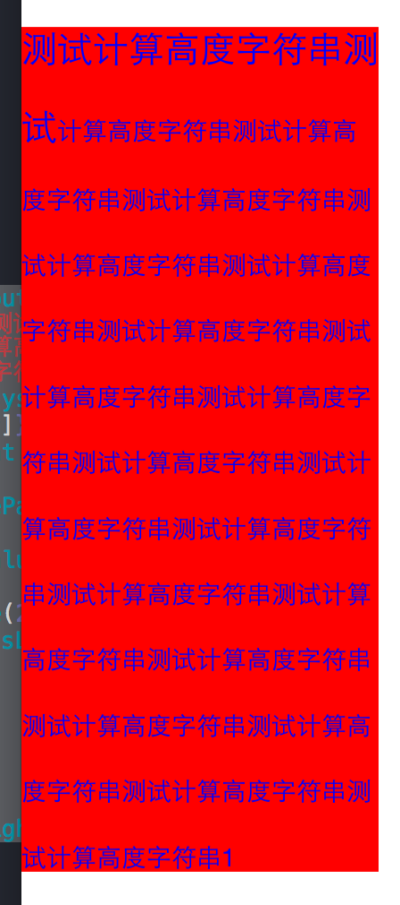

http://www.itnose.net/detail/6177538.html
http://blog.csdn.net/daiyibo123/article/details/46874191
//NSAttributedString的属性：
// NSFontAttributeName 设置字体属性，取值为 UIFont类型，默认值：字体：Helvetica(Neue)字号：12
// NSForegroundColorAttributeNam 设置字体颜色，取值为 UIColor对象，默认值为黑色
// NSBackgroundColorAttributeName 设置字体所在区域背景颜色，取值为 UIColor对象，默认值为nil,透明色
// NSLigatureAttributeName 设置连体属性，取值为NSNumber 对象(整数)，0表示没有连体字符，1表示使用默认的连体字符
// NSKernAttributeName 设定字符间距，取值为 NSNumber 对象（整数），正值间距加宽，负值间距变窄
// NSStrikethroughStyleAttributeName 设置删除线，取值为 NSNumber 对象（整数）
// NSStrikethroughColorAttributeName 设置删除线颜色，取值为 UIColor 对象，默认值为黑色
// NSUnderlineStyleAttributeName 设置下划线，取值为 NSNumber 对象（整数），枚举常量 NSUnderlineStyle中的值，与删除线类似
// NSUnderlineColorAttributeName 设置下划线颜色，取值为 UIColor 对象，默认值为黑色
// NSStrokeWidthAttributeName 设置笔画宽度，取值为 NSNumber 对象（整数），负值填充效果，正值中空效果
// NSStrokeColorAttributeName 填充部分颜色，不是字体颜色，取值为 UIColor 对象
// NSShadowAttributeName 设置阴影属性，取值为 NSShadow 对象
// NSTextEffectAttributeName 设置文本特殊效果，取值为 NSString 对象，目前只有图版印刷效果可用：
// NSBaselineOffsetAttributeName 设置基线偏移值，取值为 NSNumber （float）,正值上偏，负值下偏
// NSObliquenessAttributeName 设置字形倾斜度，取值为 NSNumber （float）,正值右倾，负值左倾
// NSExpansionAttributeName 设置文本横向拉伸属性，取值为 NSNumber （float）,正值横向拉伸文本，负值横向压缩文本
// NSWritingDirectionAttributeName 设置文字书写方向，从左向右书写或者从右向左书写
// NSVerticalGlyphFormAttributeName 设置文字排版方向，取值为 NSNumber 对象(整数)，0表示横排文本，1表示竖排文本
// NSLinkAttributeName 设置链接属性，点击后调用浏览器打开指定URL地址
// NSAttachmentAttributeName 设置文本附件,取值为NSTextAttachment对象,常用于文字图片混排
// NSParagraphStyleAttributeName 设置文本段落排版格式，取值为 NSParagraphStyle 对象
NSParagraphStyleAttributeName 设置文本段落排版格式，取值为 NSParagraphStyle 对象
// alignment 对齐方式，取值枚举常量 NSTextAlignment
// firstLineHeadIndent 首行缩进，取值 float
// headIndent 缩进，取值 float
// tailIndent 尾部缩进，取值 float
// ineHeightMultiple 可变行高,乘因数，取值 float
// maximumLineHeight 最大行高，取值 float
// minimumLineHeight 最小行高，取值 float
// lineSpacing 行距，取值 float
// paragraphSpacing 段距，取值 float
// paragraphSpacingBefore 段首空间，取值 float
//
// baseWritingDirection 句子方向，取值枚举常量 NSWritingDirection
// lineBreakMode 断行方式，取值枚举常量 NSLineBreakMode
// hyphenationFactor 连字符属性，取值 0 - 1
NSMutableAttributedString *string = [[NSMutableAttributedString alloc]initWithString:@"测试计算高度字符串测试计算高度字符串测试计算高度字符串测试计算高度字符串测试计算高度字符串测试计算高度字符串测试计算高度字符串测试计算高度字符串测试计算高度字符串测试计算高度字符串测试计算高度字符串测试计算高度字符串测试计算高度字符串测试计算高度字符串测试计算高度字符串测试计算高度字符串测试计算高度字符串测试计算高度字符串测试计算高度字符串1"];
[string setAttributes:@{NSFontAttributeName:[UIFont systemFontOfSize:14], NSForegroundColorAttributeName:[UIColor blueColor]} range:NSMakeRange(0, string.length)];
[string addAttribute:NSFontAttributeName value:[UIFont systemFontOfSize:20] range:NSMakeRange(0, 11)];
NSMutableParagraphStyle *paragraghStyle = [[NSMutableParagraphStyle alloc]init];
paragraghStyle.lineSpacing = 20;
[string addAttribute:NSParagraphStyleAttributeName value:paragraghStyle range:NSMakeRange(0, string.length)];
CGSize size = [string boundingRectWithSize:CGSizeMake(200, 500) options:NSStringDrawingUsesFontLeading|NSStringDrawingUsesLineFragmentOrigin context:nil].size;
UILabel *label = [[UILabel alloc]init];
label.numberOfLines = 0;
label.lineBreakMode = NSLineBreakByWordWrapping;
label.backgroundColor = [UIColor redColor];
label.attributedText = string;
label.frame = CGRectMake(0, 100, size.width, size.height);
[self.view addSubview:label];
